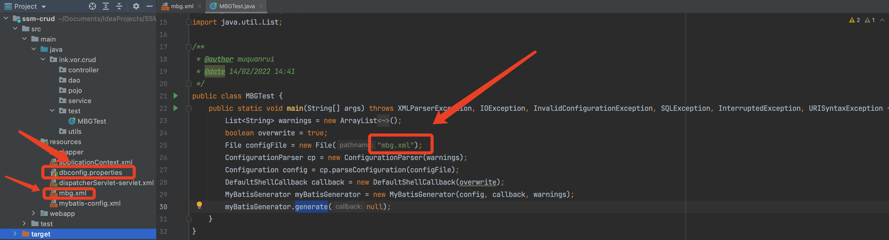
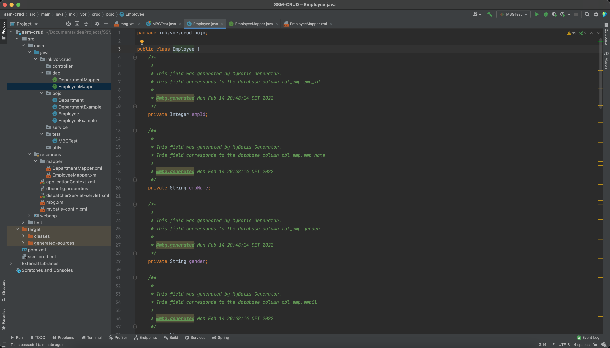

1 问题发现
在做尚硅谷SSM实战演练丨ssm整合快速开发CRUD这个项目时，雷丰阳老师使用的是Eclipse进行开发，和IDEA的环境还是略有区别的，比如之前写过的IDEA获取资源文件时的路径问题，但是在解决找到xml配置文件后，又碰到了新问题，xml文件成功被解析，但是却没有生成bean，dao等文件，以下是文件路径和配置文件原本的内容：

<?xml version="1.0" encoding="UTF-8"?>
<!DOCTYPE generatorConfiguration
PUBLIC "-//mybatis.org//DTD MyBatis Generator Configuration 1.0//EN"
"http://mybatis.org/dtd/mybatis-generator-config_1_0.dtd">
<generatorConfiguration>
<properties resource="dbconfig.properties"></properties>
<context id="DB2Tables" targetRuntime="MyBatis3">
<!--配置数据库连接-->
<jdbcConnection driverClass="${jdbc.driverClassName}"
connectionURL="${jdbc.url}"
userId="${jdbc.username}"
password="${jdbc.password}">
</jdbcConnection>
<javaTypeResolver >
<property name="forceBigDecimals" value="false" />
</javaTypeResolver>
<!--指定JavaBean生成位置-->
<javaModelGenerator targetPackage="ink.vor.crud.pojo" targetProject="src/main/java">
<property name="enableSubPackages" value="true" />
<property name="trimStrings" value="true" />
</javaModelGenerator>
<!--指定SQL映射文件生成位置-->
<sqlMapGenerator targetPackage="mapper" targetProject="src/main/resources">
<property name="enableSubPackages" value="true" />
</sqlMapGenerator>
<!--指定dao接口生成的位置-->
<javaClientGenerator type="XMLMAPPER" targetPackage="ink.vor.crud.dao" targetProject="src/main/java">
<property name="enableSubPackages" value="true" />
</javaClientGenerator>
<!--指定每个表的生成策略-->
<table tableName="tbl_emp" domainObjectName="Employee"></table>
<table tableName="tbl_dept" domainObjectName="Department"></table>
</context>
</generatorConfiguration>2 获取配置文件
File configFile = new File("mbg.xml");如果直接写文件名：
- 使用main方法：配置文件要放在项目SSM-CRUD的根目录下。
- 如果使用JUnit：配置文件要放在项目SSM-CRUD的模块ssm-crud的根目录下。
如果配置文件放在了resources目录下（也就是上文图中现在它所在的位置），需要使用类加载器获取资源文件的方法：
File configFile = new File(new MBGTest().getClass().getClassLoader().getResource("mbg.xml").toURI());3 mbg.xml获取properties文件
<properties resource="dbconfig.properties"></properties>只要dbconfig.properties在资源文件下，则直接写文件名是正确的，可以加载该文件。
因为观察源码发现，MyBatisGeneratorConfigurationParser在调用方法parseProperties解析properties属性时，会调用ObjectFactory.getResource方法，而它实际上还是调用ClassLoader.getResource方法，在项目生成后的类路径下，也就是target/classes/目录根据文件名获取资源文件，而之前src/main/resources目录下的文件都会被Maven拷贝到该目录下，因此这里直接写文件名dbconfig.properties的方法是正确无误的。
// MyBatisGeneratorConfigurationParser.parseProperties
if (stringHasValue(resource)) {
resourceUrl = ObjectFactory.getResource(resource);
if (resourceUrl == null) {
throw new XMLParserException(getString(
"RuntimeError.15", resource)); //$NON-NLS-1$
}
} else {
resourceUrl = new URL(url);
}
// ObjectFactory.getResource
for (ClassLoader classLoader : resourceClassLoaders) {
url = classLoader.getResource(resource);
if (url != null) {
return url;
}
}4 mbg.xml指定生成位置targetProject
<!--指定JavaBean生成位置-->
<javaModelGenerator targetPackage="ink.vor.crud.pojo" targetProject="src/main/java">
<property name="enableSubPackages" value="true" />
<property name="trimStrings" value="true" />
</javaModelGenerator>
<!--指定SQL映射文件生成位置-->
<sqlMapGenerator targetPackage="mapper" targetProject="src/main/resources">
<property name="enableSubPackages" value="true" />
</sqlMapGenerator>
<!--指定dao接口生成的位置-->
<javaClientGenerator type="XMLMAPPER" targetPackage="ink.vor.crud.dao" targetProject="src/main/java">
<property name="enableSubPackages" value="true" />
</javaClientGenerator>在mbg.xml中需要通过targetProject和targetPackage指定JavaBean、DAO接口和SQL映射mapper文件的生成位置，其中targetProject是对路径指定的关键属性，此时它们都使用相对路径src/main/来指定，但是运行程序发现最后并没有正确生成相应文件，这些包下面还是空的。
查看源码发现，这些参数在经过XML解析后，都交给MyBatisGenerator.generate方法来作为生成文件的路径，进而调用writeFile方法来写入文件。
private void writeFile(File file, String content, String fileEncoding) throws IOException {
FileOutputStream fos = new FileOutputStream(file, false);
OutputStreamWriter osw;
if (fileEncoding == null) {
osw = new OutputStreamWriter(fos);
} else {
osw = new OutputStreamWriter(fos, fileEncoding);
}
BufferedWriter bw = new BufferedWriter(osw);
bw.write(content);
bw.close();
}该方法将拼接后的相对路径作为参数构建File对象，因此这个问题还是相对路径的根目录所在位置问题：
- 如果使用的程序入口是main方法，那么相对路径根目录是Project目录。
- 如果使用的程入口是JUnit方法，那么相对路径根目录是当前Module目录。
之前的代码中使用的是main方法，而targetProject却使用相对路径src/main/来指定，相当于要从当前Project根目录下直接进入src目录，但事实上应该先进入当前Project下的Module下再进入src目录，即ssm-crud/src/main。
当然，在不改变mbg.xml配置文件写法的情况下，也可以直接将main方法替换为JUnit测试方法：
public class MBGTest {
@Test
public void testMBG() throws XMLParserException, IOException, InvalidConfigurationException, SQLException, InterruptedException, URISyntaxException {
List<String> warnings = new ArrayList<String>();
boolean overwrite = true;
File configFile = new File(new MBGTest().getClass().getClassLoader().getResource("mbg.xml").toURI());
ConfigurationParser cp = new ConfigurationParser(warnings);
Configuration config = cp.parseConfiguration(configFile);
DefaultShellCallback callback = new DefaultShellCallback(overwrite);
MyBatisGenerator myBatisGenerator = new MyBatisGenerator(config, callback, warnings);
myBatisGenerator.generate(null);
}
}这两种修改方法，都能让所有文件被正确生成。
